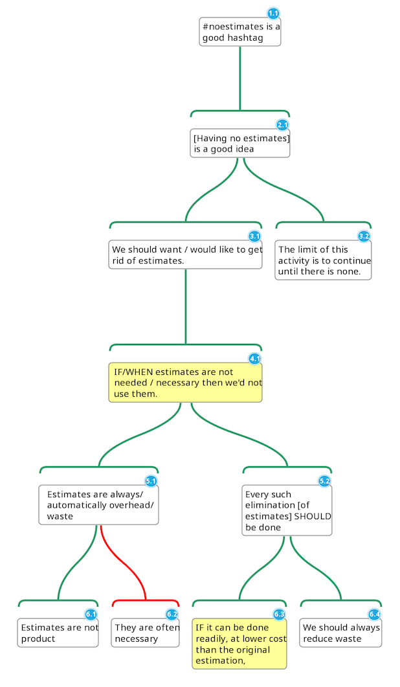

Argument Maps
Ron Jeffries is a well known writer on agile (or is it Agile?) practices in the software industry. He has a very active Twitter account and his posts tend to have a nice logical and empirical style. He has recently been talking about the value (or not) of estimation in the software creation process. One series of posts included the nicely rounded claim that “#noestimates” is a good hashtag :) Very interesting.
On the other hand I’ve been lurking on Kialo and reading about argument maps in general. Argument maps are basically a type of diagram which helps visualise the flow of reasoning between different claims and objections and can be used to make better decisions. They appeal to my rather pedantic attitude to language and seem to be a great tool to have in the toolbox.
So I thought it might be interesting to break down Ron’s #noestimates reasoning using this technique and maybe learn something new on the way.
To create the diagram the first thing to do is to extract the claims from the text. It is normal in these situations for some claims to be repeated, mixed together and restated in other terms. What’s great about the argument map is that at the end of the process not only do you have a distilled version of the original claims but, more importantly, a list of the assumptions or premises underlying the argument. These are often the places where disagreement is hiding and can be very enlightening.
The following is an extract from Ron’s post with the claims highlighted in bold. Between each numbered point I’ve added a note (as objectively as possible) to map the text to one or more unambiguous claims. Let’s see how it goes.
1. So I was thinking about #noestimates. I’d think we could agree that IF estimates were not needed we would not use them (i), because waste (ii). (If not I have something interesting to learn.)
Point (i) is a claim reasoned from a (so far incomplete) supporting claim (ii). Don’t worry this second claim is expanded below.
2. And WHEN they’re not needed, we’d not use them, I should think?
In terms of an argument map this claim is simply a stronger restatement of 1.
3. Now I want to suggest that estimates are always waste.
This is an independent claim drawn from 4.
4. They are not product (i) (I hope) so they are automatically waste (ii).
Clearly two separate claims. The second is a restatement of 3 substituting “automatically” with the synonym “always” so we can combine the two claims into one.
5. We should want to get rid of them on those grounds. (See Waste)
I first thought that this was a repetition of 1 & 2 but it’s not. It’s implicitly relying on a further claim, which is made in point 7.
6. Now I am somewhat bemused by people actually arguing FOR estimates, rather than saying “well, they are waste, but unfortunately they are often necessary, so we should be good at them”. Maybe someone will explain that to me. But that’s not my point.
I love this. Ron somewhat generously mentions a potential objection to claim 5. It’ll be interesting to see where this objection sits and its relationship to the rest of the argument.
7. Since they are waste (i), if they are not necessary (ii), surely we all would like to get rid of them (iii), save only the people whose job it is to produce estimates. Their hands are not clean and we’ll ignore them.
Claims supporting point 5. The same point is expanded further in point 9. Note the second claim, couched with an “if” is actually a predicate. Let’s see where that ends up on the map.
8. Now I want to tell you a story…..[snip]
Anecdotal. Here Ron relates a story from his previous experience. It supports the point he’s making but does not make any further claims so I’ll skip it.
9. Since estimates are always overhead, always waste (i), every such elimination, [if it can be done readily, at lower cost than the original estimation (iii)], it SHOULD be done (ii), because we should always reduce waste (iv).
This is a difficult statement to parse. It restates claims 3 and 7 (i) & (iv) but with a caveat about costs involved (iii). From a philosophical point of view the claim “every such elimination SHOULD be done” is a classic example of Hume’s Is-Ought problem where statements of fact are translated to general prescriptive rules. It’s no problem for our argument map though.
10. What is the limit of this activity? We should keep eliminating waste, including waste from estimates until there is none. The limit is: NO ESTIMATES (ii).
Again repeating claims made in 1, 2, 5, 7 and 9 - this is the main point it would seem - but this time with a further claim about the limiting case.
11. That’s why it’s a good idea and why it’s probably a good hashtag as well.
And last but not least we have the headline claim about the hashtag being a good one :)
The next step is to translate the claims and their supporting claims into a tree structure. The online mind mapping tool MindMup has a free argument visualizer which works great. This is the result.

It was actually quite hard to be totally objective but I think it gives a faithful summary of the flow of reasoning. At the top we have the main contention and underneath a hierarchy of other claims that support it.
It actually felt a little bit like refactoring the argument, extracting the relationships between claims and simplifying by removing redundancy and repetition.
It seems the most interesting things in these diagrams are often the leaves of the tree which, having no supporting claims and therefore represent the premises and assumptions of the author. In this case we have:
- Estimates are not product [so they are waste].
- We should always reduce waste.
- The limit of eliminating waste is to continue until there is none.
Ergo, #noestimates!
If you don’t agree with these points then you probably don’t agree with the conclusion.
On the other hand, it’s interesting to see that the conditionals (4.1 and 6.3, yellow in the diagram) and the objection that Ron himself mentions (6.2) are basically limiting the scope to saying “if it can be done then it should be done”. Valuable in itself and I think that’s Ron’s general point rather than more extreme interpretations that you might hear.
Ron makes the same points in a later post stating the bottom line as: “We always could stop estimating, but it’s not always the right thing to do. It’s always legitimate to think about it.”
It’s also clear where you might insert more claims or objections to the argument in general. For example, you might object to the point that not being product would directly imply waste. My personal opinion is that in some projects the business value of a feature is a function of time, and therefore estimates allow a more precise calculation of value and therefore better decisions and better products. I could insert this objection below the “estimates are always waste” claim. This ability to insert claims and objections makes it an excellent tool for collaborative and constructive decision making, as is done in sites like Kialo.
In conclusion, I found argument maps to be a great way to distill a piece of text and identify the key claims and premises and actually gain a better understanding. It’s also easier to see where further claims or objections might fit making it an great tool for collaboration. I’ll certainly be using it more often especially for technical decisions and on longer and more complicated arguments.
Many thanks to my collegue Rachel M. Carmena for her review, suggestions and encouragement.